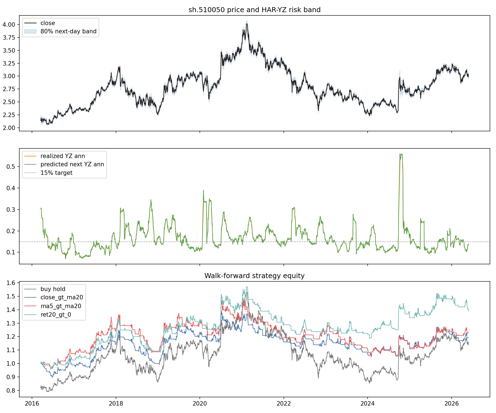
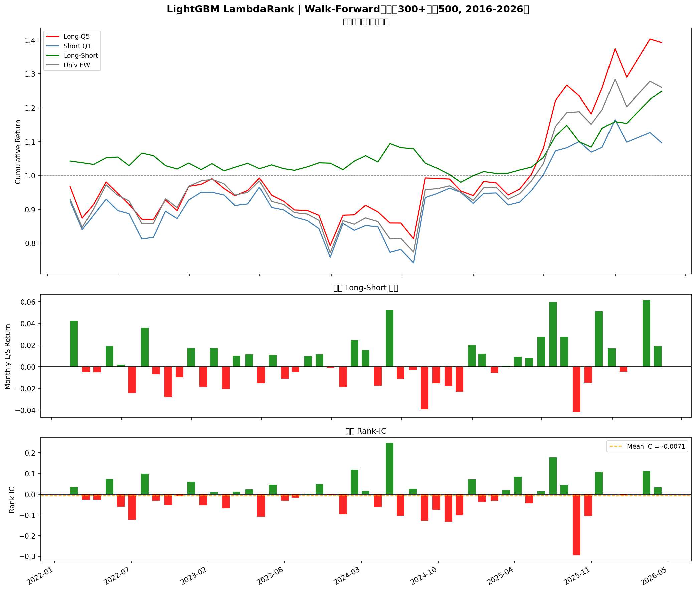
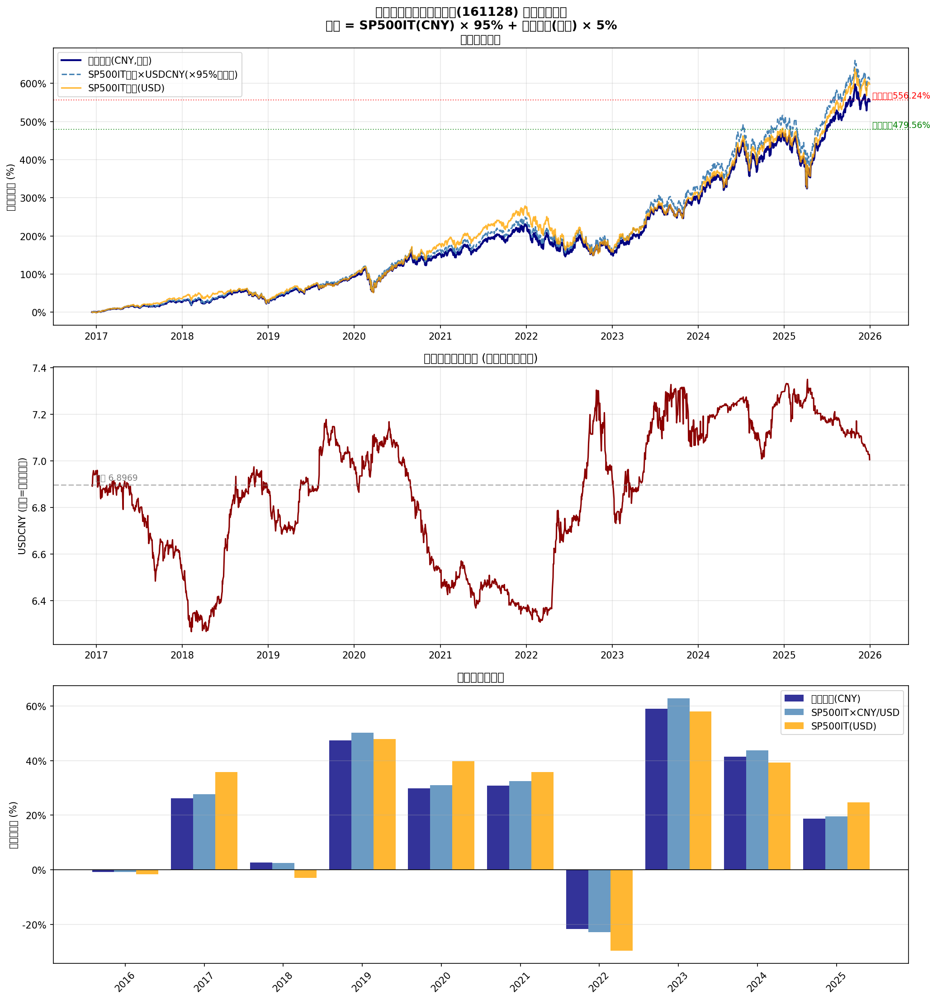

ETF Volatility and Kelly Allocation
HAR Yang-Zhang and EGARCH volatility forecasting with long-only Kelly overlays, trend filters, regime summaries, and charted backtests.
A compact portfolio of selected projects covering ETF strategy research, factor modeling, corporate bond structural estimation, benchmark verification, and reproducible financial analytics.
HAR Yang-Zhang and EGARCH volatility forecasting with long-only Kelly overlays, trend filters, regime summaries, and charted backtests.
A rotation strategy that uses signal state and rolling correlations to replace bearish ETF exposure with stronger opposite-style candidates.
Cross-sectional ranking research using volatility, return features, trend rules, and parameter sweeps for strategy comparison.
Public-safe scripts for corporate bond spread analysis, structural estimation, grid search, and early RL environment design.
Technical-factor generation and ML backtest research around Alpha158-style features with selected performance visualizations.
Verification scripts for benchmark and NAV behavior, including reproducible checks and comparison charts.
Tiger compiler pipeline with ANTLR grammar, semantic checks, IR generation, data-flow analysis, and register-allocation output.
Python network simulator for distributed root election, message propagation, and loop-free spanning-tree convergence.
RNN, LSTM, Seq2Seq, Transformer, fine-tuning, and context-distillation experiments from OMSCS deep-learning work.
C/CUDA list ranking, funnel sort, branch prediction, and cache-coherence simulator modifications.
Android encryptor app and Java string utility project with Gradle structure and tests.



The public portfolio excludes raw market datasets, private research data, model weights, VM images, archives, IDE files, caches, credentials, and large generated outputs. The goal is to make the work easy for employers to review while keeping sensitive and unnecessary files out of GitHub.